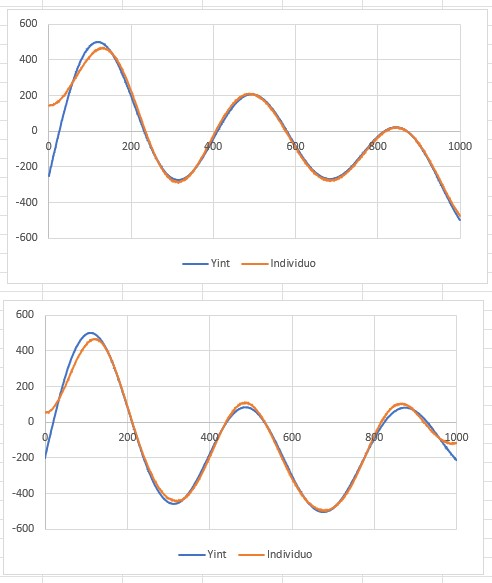
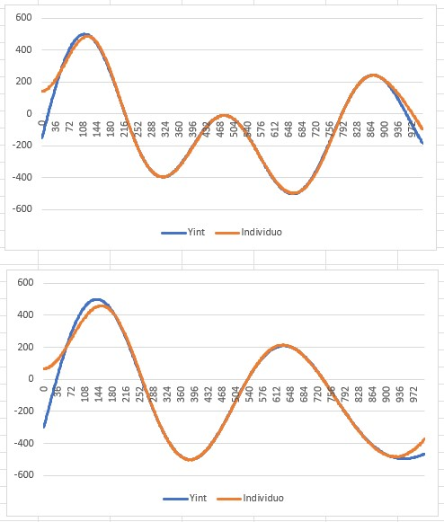
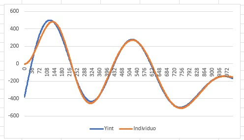

Dada una serie de datos (X, Y) donde X no se repite, se busca la expresión Y = F(X) que genere esa serie de datos.
El algoritmo es el siguiente:
1. Se necesita una serie de datos para encontrarle un patrón. Estos datos pueden ser encontrados en Internet con estudios de comportamientos como el valor del dólar con respecto al peso colombiano o el caudal de un río. Para esta simulación, se opta por generar esos datos usando una ecuación del tipo Y=a*SENO(b*X+c) + d*SENO(e*X+f) + ...... + p*SENO(q*X+r). Dónde a, b, c, d, e, f, ....p, q, r son valores aleatorios. De esa manera se sabe de antemano que esos datos tendrán un patrón y que la variable X es causal de lo que ocurre con Y.
2. Usando la anterior ecuación se generan N valores (X, Y) con especial cuidado de no repetir el valor de X. Esto es fácil haciendo un ciclo ascendente: desde X = valor mínimo hasta valor máximo a paso real positivo.
3. Se procede a normalizar esos valores (X, Y), por lo que quedan entre 0 y 1. Luego se multiplican por 1000 y se truncan para que sean enteros, finalmente a cada valor Y se le resta 500 (para que queden valores positivos y negativos). Ese será la serie de datos a buscarle un patrón. OJO: Esa conversión a enteros puede generar un efecto indeseable que es que queden valores X repetidos, luego se deben eliminar esos registros (X, Y) hasta que ningún valor X se repita.
4. En el punto 2 se generaron N valores. Ese valor N es clave porque será el número de filas que tendrá un arreglo bidimensional futuro, ¿y cuántas columnas tendrá? M columnas. Se tiene un arreglo bidimensional de M columnas por N filas donde cada celda tendrá un valor entero. ¿Cómo llenar las casillas de ese arreglo bidimensional?
5. Por cada columna de ese arreglo bidimensional se genera una ecuación del tipo Y = s*COSENO(t*X+u). Dónde s, t, u son valores aleatorios. Con esa ecuación, se llenarán las N filas de esa columna ¿Cómo? Tenemos los valores de X, luego es ir de fila en fila generando el Y correspondiente. Se procede luego a normalizar esos valores de Y, multiplicarlos por 100, truncarlos y restarle 50.
6. Es momento de generar la población: Cada individuo es un arreglo unidimensional de enteros. ¿Qué tamaño tendrá ese arreglo? Si es un número muy bajo, su complejidad será baja, será más fácil de evaluar pero se corre el riesgo que no de la talla para dar con los valores de la serie de datos a encontrarle un patrón. Si es un número muy alto, tendrá más complejidad pero requerirá más tiempo (Un aumento lineal) de evaluación.
7. ¿Qué valores tendrá ese arreglo unidimensional que es cada individuo? Valores enteros entre 0 y el número de columnas que tiene el arreglo bidimensional generado anteriormente. Ejemplo: Supongamos que el individuo en su arreglo unidimensional tiene los valores 7, 2, 8, 1, 3, 0, 2, 4, 0, 3 (el arreglo bidimensional tiene 9 columnas, que van de 0 a 8). ¿Qué se hace con esos valores? El primer valor es 7, luego 2, esto significa que al evaluar el individuo se suman los valores de la columna 7 con los valores de la columna 2, continuamos sumando los valores de la columna 8, 1, 3, 0, 2, 4, 0 (si, se puede repetir) y 3. Eso genera un resultado por cada fila. Cada resultado se compara (diferencia absoluta) con el valor de la fila de los valores a buscarle patrón. Acumulando todas esas diferencias, se obtiene el "fitness" de ese individuo. Entre menor sea ese valor, mejor.
8. Se cambia en forma aleatoria algún valor del arreglo unidimensional del individuo, repitiendo de nuevo el proceso de sumar columnas. Si el acumulado es menor se mantiene el cambio, en caso contrario se retorna al valor anterior del arreglo unidimensional.
9. Después de ejecutar miles de veces el punto anterior, se habrá obtenido un individuo (arreglo unidimensional) cercano al ambiente. Aquí una serie de ejemplos donde se generan ambientes (línea azul) y luego se muestra el mejor individuo (línea naranja):



Conclusiones:
Este algoritmo ha mostrado un buen ajuste y una buena velocidad.
¿Y la colaboración? Como el individuo es una serie de sumas (y el orden de los sumandos no altera el resultado), abre las puertas a poder usar el operador cruce entre dos o más individuos, aumentando la variedad.
Descargue el programa en C# dando clic aquí.
¿Qué faltaría en este enfoque?
1. Optimizar el código.
2. Tener en consideración los datos de entrenamiento y los datos de validación
3. Usar múltiples poblaciones y paralelizar
4. Nuevo enfoque: variar las columnas no usadas del arreglo bidimensional por copias similares (operador mutación) de las columnas que si se usaron en el mejor individuo.
5. Probar con datos X,Y obtenidos de algún dataset en Internet.
6. Hacer la aplicación gráfica.
7. Explorar a hacerlo con varias variables causales (X,Y,Z); (W,X,Y,Z)